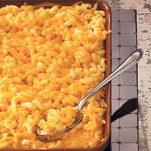

Old School Mac n'Cheese
This is a completely unpretentious, down-home macaroni and cheese
recipe just like my grandma and mom always made. A simple white sauce
where you add cheese and a few other flavors with macaroni and a potato
chip crust. This recipe makes a lot, I like to make two pans so I can take
one to a pot luck and have the other one to keep in the fridge for later.
It's an easy recipe to adjust down if you only want to make one pan.
If you aren't cooking it right away, just keep the topping separate
until you are ready to put it in the oven.

Ingredients:
- 1 ¾ pounds whole-wheat macaroni
- 3⁄4 cup butter
- ¾ cup all-purpose flour
- 6 cups milk, divided
- 1 tablespoon Worcestershire sauce
- 1 teaspoon mustard powder
- 1 teaspoon onion powder
- 1 teaspoon cayenne pepper
- salt and ground black pepper to taste
- 1 (8 ounce) package shredded Cheddar cheese, divided
- 3 (8 ounce) packages shredded American cheese
- 1 (8 ounce) bag potato chips (such as Lay's), crushed
- 1 cup shredded Cheddar cheese
- ⅓ cup grated Parmesan cheese
- butter-flavored cooking spray
Directions:
- Preheat oven to 375 degrees F (190 degrees C).
- Bring a large pot of lightly salted water to a boil. Cook
elbow macaroni in the boiling water, stirring occasionally until
cooked through but firm to the bite, 8 minutes; drain.
- Melt butter in a large pot over medium-low heat. Slowly add flour
to butter, whisking constantly; cook until brown and the mixture
no longer smells of flour, about 5 minutes. Pour 1 cup milk into
the flour mixture, whisking continually until fully incorporated,
about 45 seconds; repeat twice. Add remaining 3 cups milk to the
mixture, whisking to incorporate. Stir Worcestershire sauce,
mustard powder, onion powder, and cayenne pepper into the mixture;
season with salt and black pepper.
- Reduce heat to low. Cook sauce, whisking frequently, until it
begins to thicken, about 10 minutes. Add about half the package of
shredded Cheddar cheese; stir continually until the cheese melts
completely. Repeat with remaining half package of Cheddar cheese and
the American cheese, about 4 ounces at a time. Once cheese is entirely
incorporated, remove sauce from heat.
- Stir drained macaroni into the cheese sauce to coat. Divide macaroni
between two 9x13-inch baking dishes.
- Mix crushed potato chips, 1 cup shredded Cheddar cheese, and Parmesan
cheese in a bowl. Top the macaroni with the potato chip mixture evenly.
Spray the potato chip mixture with cooking spray.
- Bake in preheated oven until the crust is golden brown and the sauce
is bubbling, 35 to 45 minutes.
Nutrition Facts
506.7 calories; protein 21.5g 43% DV; carbohydrates 40.2g 13% DV;
fat 30.1g 46% DV; cholesterol 75.9mg 25% DV; sodium 783.4mg 31% DV.
Link to the original Page